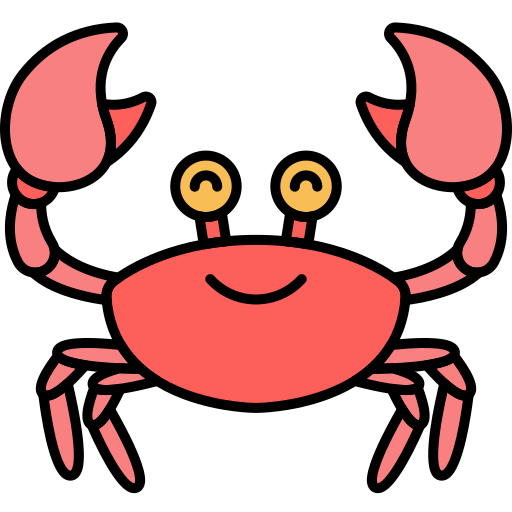
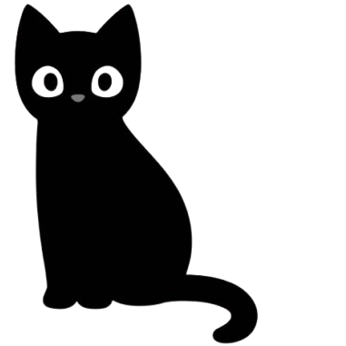
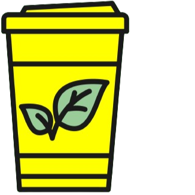

olivia terry
olivia terryListener. Designer. Developer.
Hey, thanks for stopping by! I'm a new graduate from the University of Pittsburgh
with a B.S. in Digital Narrative and Interactive Design (DNID), a minor in Computer
Science, and a certificate in Digital Media.
From starting Pitt's
first UX Club to helping organize its biggest hackathon, I love bringing creative
communities together and collaborating with other designers. Recently, I’ve had the
privilege of contributing to design research at CMU’s Human-Computer Interaction Institute and working
as a UX Engineering Intern at
Wabtec.
I'm currently seeking a full-time UX position!
Please feel free to shoot me an email!: ✉️
oliviaterry70@gmail.com
Olivia's Resume
When I'm Not Designing...
I always start my day with the NYT Wordle and Connections (+ the Washington Post crossword as a special weekend treat!)
I bake A LOT. My specialties are hot apple cider donuts and brown butter chocolate chunk toffee cookies!
I love playing cozy or story-rich PC games like The Sims 4, Animal Crossing, & What Remains of Edith Finch.
...or you can find me bouncing between local parks, cafes, bookshops, and antique stores!
More Fun Facts!

I'm a Cancer Sun, Sagitarrius Moon, and Leo Rising (if you know what this means, please email me immediately.)

I love Halloween! My house is always decorated by September 1 and I design a yearly spooky movie watch list.

My bevs of choice are an iced Pistachio Matcha Latte or a hot Masala Chai!